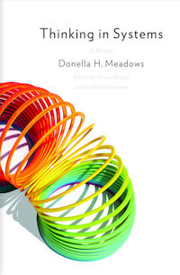
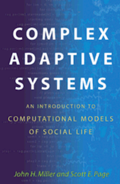
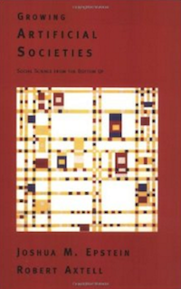
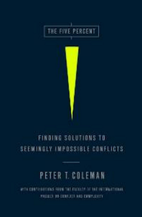
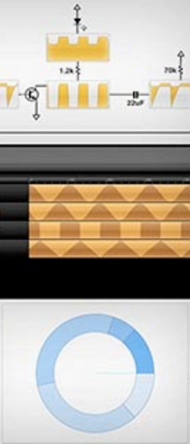

SIMULATING
THE WORLD
(IN EMOJI😘)
nicky case, jan 2016
Note: It looks like your browser doesn't support emoji,
but don't worry! I switched this page over to a fallback font,
so you can still enjoy it.
It's not 🌟full-color🌟 emoji, but oh well.
Such is life.
So, I used to live in California.
Back then, it was going through a rough season of droughts, water shortages, and wildfires.
It's still going on, actually.
These problems involve a messy mix of
environmental, economic, and political systems...
all of which came together to create the
perfect lack-of-rain-let-alone-a-storm.
Point is, our world is run by complex systems.
We may feel helpless to change them or understand them...
but I believe all of us can — and must — learn to
think in systems.
That’s where simulations come in!
It’s easier to understand a system if you can see the system,
or better yet, play with the system.
So today, I’d like to share with you some simple simulations of the world...
made in emoji. 🌲🌲🌲
A Tiny Forest For Tiny Trees
As it turns out, forest firefighters already use computer simulations
to tackle wildfires, in real time!
And it’s not just firefighters.
With the help of simulations, a growing group of scientists
from different disciplines have discovered a few strange things about the systems of our world.
First, emergence:
complex systems can arise from simple rules.
This is how a few chess rules can give us infinite play,
and how these tiny emoji sims can capture real complexity.
Second, all complex systems have things in common.
So in a way... Financial crises are like forest fires.
Terrorist groups are like termite colonies.
Pandemics are like a GIF people won't stop spreading.
Since you can learn a few core lessons about all systems from any system,
let’s stick with our forest sim, and add one more rule:
🌲→🔥 Trees sometimes get hit by lightning & catch on fire.
Sims can help explain a system,
but they're also great for exploring systems.
Experimentation.
Asking, “what if?”
For example, what do you think would happen now,
if you increased tree growth? (empty→🌲)
What behavior would emerge?
Don’t worry, you're not being judged or graded,
this is only for you to express your prediction:
And now, you get to run that experiment.
A Forest With Thunderbolt & Lightning, Very Very Frightening
Ah, you predicted that higher tree growth would lead to more trees.
That’s an intuitive and obvious choice,
so of course, it’s wrong.
That’s because more trees → fire can spread further → fewer trees...
but then, fewer trees → fire spreads less → trees can grow back → more trees, repeat.
And the more growth, the faster this birth-death-rebirth cycle spins.
Ah, you predicted that more trees would lead to fewer trees!
Clever. However, that’s only half-true!
I assume you figured out that more trees → fire can spread further → fewer trees...
but you forgot that afterwards,
fewer trees → fire spreads less → trees can grow back → more trees, repeat.
And the more growth, the faster this birth-death-rebirth cycle spins.
Heh, you must’ve thought I was giving you a trick question.
I mean, I was, but still.
Anyway, more trees → fire can spread further → fewer trees...
but then, fewer trees → fire spreads less → trees can grow back → more trees, repeat.
And the more growth, the faster this birth-death-rebirth cycle spins.
You predicted that you’d get both more trees and fewer trees?
That doesn’t make sense, it’s a contradiction,
so of course, you’re totally right!
More trees → fire can spread further → fewer trees...
but then, fewer trees → fire spreads less → trees can grow back → more trees, repeat.
And the more growth, the faster this birth-death-rebirth cycle spins.
🌲📈→🔥📈→🌲📉→🔥📉→🌲📈⟲
This is thinking in systems.
See, we’re so used to thinking in linear cause-and-effect, A-changes-B.
But most of the world is filled with what scientists call feedback loops,
where A-changes-B-changes-A-changes-B, and so on.
One kind of feedback loop is the reinforcing loop,
when more gets you even more.
For example, in our simulation, fire creates more fire.
This kind of loop tends to create tipping points,
where a small change gets amplified over and over until it
completely alters the whole system.
more leads to more:
🔥📈→🔥📈
Another kind of loop is the balancing loop,
when more leads to less.
Balancing loops stop reinforcing loops from growing to infinity.
Like how fire makes more fire, but can’t go on forever,
because it'll run out of trees to burn, and so, results in less fire.
This kind of loop leads to stability,
because it tends to undo change.
more leads to less:
🔥📈→🌲📉→🔥📉
This is why we’re so bad at handling complex issues.
Everyone’s looking for the root cause,
but if causality is not linear, but loopy,
then there is no root cause!
That doesn’t mean we can’t still solve problems.
Simulations let us do experiments that would be impractical or impossible to try out for realsies.
For example, in this next experiment,
you're going to help trees grow,
by killing trees.
Stop.
Think for a moment.
How could that even be possible?
Now.
Let's do it.
A Forest Where You Show Trees No Mercy
Think about how counterintuitive that is,
helping trees by killing trees.
Well, forest firefighters actually do this!
They make “firebreaks” by removing small trees, underbrush, and other flammable shtuff,
to stop wildfires from spreading through.
This breaks the reinforcing loop of 🔥📈→🔥📈,
and reduces the balancing loop of 🌲📈→🔥📈→🌲📉.
That is how you change a system.
Not by fighting symptoms or pushing numbers,
but by changing the core loops.
Now that you've gotten a taste of thinking in systems,
let's do a couple final experiments.
A forest wouldn’t be an ecosystem with just one species,
so let’s simulate a forest with these two plants:
🌳 Strong Tree:
Invincible to fire, but if it’s surrounded by four or more Jerk Trees,
it'll be choked of nutrients and die.
🌱 Jerk Tree:
Invasive species.
Flammable & grows twice as fast as the Strong Tree.
Also sometimes bursts into flames.
I’ve balanced it so that, normally,
these plants would get a 50/50 split of the land.
But after you create firebreaks,
what do you think will happen?
(think loopy: what feedback loops do you change?
what would emerge from those changes?)
And just for kicks, let’s also do the complete opposite.
Instead of firebreaks, what would happen if you
kept setting random parts of the forest on fire?
And here we go again...
A Forest Where Some Trees Are, Like, Total Jerks
Did you notice how, in the normal case, the plants formed clusters
even though no rule told them to?
Scientists call this self-organization.
This is when order emerges from the bottom up,
contrary to the popular belief
that order must always come from the top down.
Self-organization also means a system
automatically adapts to new scenarios,
for better or worse.
Which brings us to your predictions...
PREDICTION #1: you thought your firebreaks would not affect the ratio of plants, which is an understandable guess! However, in an interconnected system, changing one part usually changes all the others, thanks to self-organization. Here, walls limit fire, fire limits Jerks, and Jerks limit Strongs.
PREDICTION #1: you thought your firebreaks would help the Strong Tree win. I assume you guessed that if firebreaks made the forest more fireproof, it should make the trees more fireproof, too. However, thanks to self-organization, the whole is completely different from the sum of its parts. So while your walls did lead to less fire, less fire means more Jerks, and more Jerks mean less Strongs.
PREDICTION #1: you thought your firebreaks would let the Jerk Tree win. And you were totally correct! Your walls limit fire, fire limits Jerks, and Jerks limit Strongs. Let’s stop to appreciate that you held three different system relationships in your head, and accurately predicted how they would self-organize!
PREDICTION #1: you thought the plants would do something nuts. Maybe you thought they’d cycle back and forth, like an earlier sim did. However, because the Strong Tree doesn’t affect fire or Jerks, there’s no loop there, and thus no Jerk-Strong cycle. (There are other loops, though) Instead, what happened was: your walls led to less fire, less fire meant more Jerks, and more Jerks meant less Strongs. That’s how they self-organized.
🔥📉→🌱📈→🌳📉
PREDICTION #2: you thought setting stuff on fire would not change the plant ratio. But instead, more fire led to Strong Trees winning, and therefore, less fire. Paradoxical. What happened is same logic as before, except with “more” and “less” flipped around:
PREDICTION #2: you thought setting stuff on fire would help the Strong Tree win. And, you’re right! Not only that, adding more fire also leads to less fire in the long run, paradoxically. It’s the same logic as before, except with “more” and “less” flipped around:
PREDICTION #2: you thought setting stuff on fire would let the Jerk Tree win. And that seems like it should make sense, wouldn’t a more flammable forest have more flammable trees? However, as you discovered, adding more fire made the forest stronger, and paradoxically, reduces fire in the long run! It’s the same logic as before, except with “more” and “less” flipped around:
🔥📈→🌱📉→🌳📈
(ALSO: 🌱📉→🔥📉)
You might be skeptical about these results.
And I hope you are! It’s good to be critical!
I mean, this sim is basically saying
fire is good for the forest.
That can't be right, can it?
🌲But consider the Jack Pine.
Its pine cones are sealed with wax,
and can't release its seeds until a forest fire melts the wax away.
Our hypothetical Strong Tree was merely immune to wildfires.
The Jack Pine, one of many fire-dependent trees,
is born out of fire — much like the legendary Phoenix.
🔥Also, consider that Native Americans and Australian Aboriginals
used to deliberately set fires,
under safe weather conditions,
to maintain forest diversity and stability.
In contrast, the U.S. Forest Service once decreed
that all fires must be put out by 10 a.m. the next day,
which backfired (haha),
and might've made forests unhealthier in the long run.
To this day, there's still heated debate (haha)
over if we should let more fires burn,
or even actively set fires.
🏠Heck, I’m also skeptical if we should set more fires.
There are legitimate concerns about
smoke,
soil damage,
and escaped fire accidentally burning people’s houses down.
These are complex problems, and there'll never be One Best Solution.
But that’s exactly why we gotta think in systems,
not just to tackle wildfires,
but all the global challenges we face.
So here's a gallery of simulations,
modeling some of our world's biggest problems.
Now, don't just take my sims at face value.
Think critically. Play critically.
Challenge my assumptions by changing the rules.
Create solutions I haven't even thought of.
Come up with experiments, predict what would happen, then try 'em.
Explore.
A Simulation With A Bunch Of...
😰 Peeps Gettin' Sick
🐹 Rodent Racism
😾 Cat/Dog Civil Conflict
Scientists, policymakers, forest firefighters...
all of them already use simulations to experiment
with real-world systems.
Sadly, these sims aren’t usually meant to be used or understood by us,
the public — the very people those systems impact the most.
It's high time we change that.
Think of a big problem that you care about.
Now that you know about emergence, feedback loops, and self-organization,
all these subtle forces that shape our world...
you can now create, save, and share your very own simulation.
(You can even embed your sims into webpages,
and make an interactive blog post
just like this one!)
Maybe others will build upon your sim,
and make their own sims!
Then, maybe even more people will build upon those.
And on. And on. And on.
All of us,
collaboratively constructing complexity,
blurring the line between learner & teacher,
to explain, to explore, to experiment.
💡📈→💡📈→💡📈⟲
A Simulation Of Whatever You Want, Yo
In the face of all the world's complex problems,
despair is understandable. Despair is normal.
But despair is not useful.
Imagine. What if more of us knew how to think and talk in systems?
We could have an emergence of new solutions to big problems.
We could make more feedback loops between policymakers and the people they affect.
We could self-organize to understand the world from the bottom up,
heck,
maybe even change the world from the bottom up.
We could overcome despair.
All we gotta do is start thinking in systems, and see the forest for the trees. 🌲🌲🌲

FURTHER READINGS
This whole thing was a very, very incomplete introduction to
complexity science.
I’ll admit, it’s a young science.
Still growing up, figuring out its own identity, going through science-puberty.
But I think it’s potentially revolutionary, so if you’d like to learn more,
here’s some of my favorite reads:

Thinking In Systems
(Donella Meadows, 2008)
Here’s where it all started for me.
This book was what first got me to see the world in loops,
and ever since I read it,
I hungered for complex systems.
Hence, why I devoured the following books.

Complex Adaptive Systems
(Miller & Page, 2007)
This one’s slightly more technical, but still very accessibly written.
With this book, I unlearnt my top-down mindset,
and saw how systems grow from the bottom up.

Growing Artificial Societies
(Epstein & Axtell, 1996)
Totally not accessible for a general audience, but still really cool.
In this book, the authors take “from the bottom up” to the extreme — step by step,
they build up a single, unified simulation of
population, culture, conflict, economics, and disease!
Woah.

The Five Percent
(Peter Coleman, 2011)
The previous books were more general-theory-ish,
but in this book, the author —
in collaboration with peacemakers and social psychologists —
applies complexity to the world's big “intractable problems”:
civil war, cycles of violence, political deadlock, etc.
Good stuff.

Media For Thinking The Unthinkable
(Bret Victor, 2013)
Okay, this one’s not a book, it’s a talk.
And it’s not about complexity itself,
but how we can use interactive media to wrestle with complexity!
Computers, not to replace human intuition and imagination,
but to enhance them.
Bret Victor's interactive works (like
this,
this, and
this)
are a huge inspiration to me,
and this talk of his
captures the guiding philosophy behind Simulating The World.
Emotica Online!
(Anna Anthropy, 2015)
...and here's where I got the idea to make worlds in emoji.
PLEASE BOTHER ME
Simulating The World was made by me, Nicky Case!
If you’d like to ask me questions about this very questionable project,
feel free to reach out to me at
@ncasenmare
or
Also, if you wanna check out my other shtuff,
my wobsite is
ncase.me.
(Might I recommend Parable of the Polygons?
It’s a social-system simulation I made a year ago,
in collaboration with Vi Hart,
about discrimination & diversity!)
Anyway, thank you so much for (playing/reading?)
Now let’s get out there, and show them systems what's what.
A BIG THANKS TO ALL MY
SUPPORTERS

Adriaan de Jongh
Aschelon
Benjamin Riggs
Brent Werness
Can
Casey Ross
Charlie McIlwain
Christopher
Coffeeframe
Colin
Colin #2
Cort Stratton
Craig Steele
Dylan Meconis
Eli Feasley
Fahrstuhl
Iñaki
Jared Cosulich
Joe Dytrych
Jonathan Nemo
Jordan Sam
Joshua Horowitz
Karen Cooper
Kat Suricata
Kate Fractal
Kathryn Long
Kevin
Kevin Wang
Matt Warren
May-Li Khoe
Micah Cowan
Monika Denes
Mustafa Alic
Nikita
Oscar Barda
Peter McEvoy
Phil Dougherty
Piotr Migdał
Raphael D'Amico
Richard Malone
Sarah Barbour
Yaron Shemesh
Zach Smith
Zan Armstrong
AND SPECIAL THANKS TO
Andrew Trout
Bret Victor
Catherine Ray
Emil
Erik Martin
Gabriel B. Nunes
Hamish Todd
Jamie C
Janessa Munt
Maarten Lambrechts
Max Goldstein
Nick Cammarata
Rachel Nabors
Tara Adiseshan
Tom L
Toph Tucker
Vi Hart